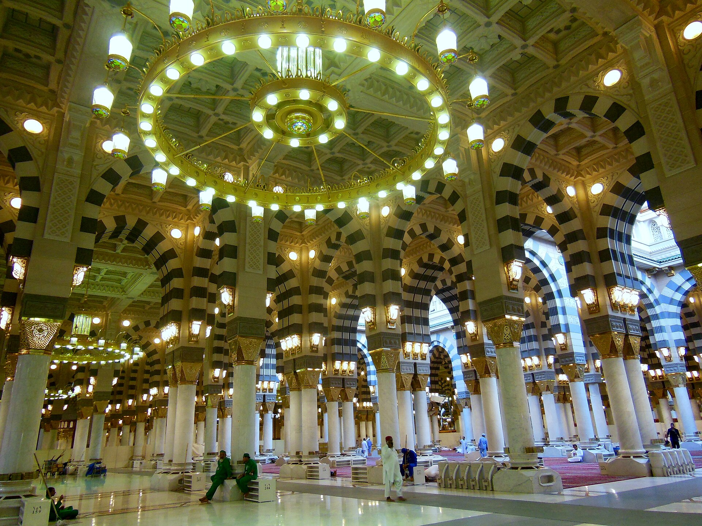

01
Mercy
Compassion toward people and creation.
محمد ﷺ
Messenger of Allah • A Life of Mercy, Character & Guidance
This tribute honors his life, character, teachings, and lasting legacy — through history, architecture, and words, never through an image of his person.
Explore His LifeHis Life
He was born in Makkah around 570 CE, into the Banu Hashim of Quraysh. Orphaned in childhood, he was raised first by his grandfather and then by his uncle. Long before any public mission, people of the city knew him for a rare reliability — they entrusted him with their affairs and called him the trustworthy.
Near the age of forty, during a retreat in the cave of Ḥirāʾ above Makkah, the first revelation of the Qur’an came to him. A private search for stillness became a public call: to worship God alone, to live with integrity, and to protect those whom society overlooked.
Years of preaching in Makkah were met with hostility. In 622 CE he and his companions migrated to Madinah — the Hijrah — where a community took shape around worship, consultation, and a written covenant of mutual care. From that city his message spread, not only as belief, but as a way of living together in justice.
Those who knew him remembered gentleness joined to resolve: patience with the young, dignity toward the poor, and a refusal to answer cruelty in kind when mercy was possible. His leadership was pastoral as much as political; his influence endures wherever Muslims seek a measure for character.

Timeline
Born into Quraysh in the Year of the Elephant, and known from youth for honesty and restraint.
The opening verses of the Qur’an are revealed in the cave of Ḥirāʾ, beginning his prophethood.
Migration from Makkah establishes a community of faith, justice, and shared responsibility.
He enters the city in peace after years of exile, granting a general amnesty to former opponents.
After the Farewell Pilgrimage, he dies in Madinah, leaving a completed message and a living community.
Character
01
Compassion toward people and creation.
02
Fairness, honesty, and responsibility.
03
Kindness, patience, and care for others.
Indeed, I was sent to perfect good character.
Legacy
His teachings formed a living tradition of worship, ethics, and community that still shapes how millions pray, give, seek justice, and treat one another. His character remains a standard of mercy; his leadership joined spiritual depth to practical care for society. Across languages and centuries, Muslim communities continue to find in his example a guide for private conduct and public life — a significance that has not receded with time.
References
Hero: Al-Masjid An-Nabawi (Bird’s Eye View) by Konevi, via Wikimedia Commons.
His Life: Masjid e Nabawi Interior 2, via Wikimedia Commons.
Quote section: Great Mosque of Mecca, via Wikimedia Commons. The Kaaba and Masjid al-Haram are shown as sacred architecture only.